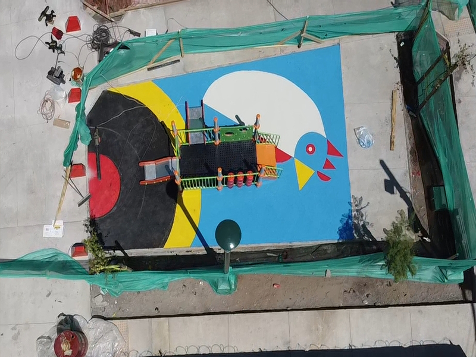

Guía técnica · Caucho in situ
EPDM vs TPV: ¿Cuál es la diferencia?
Comparativa completa para elegir el material correcto en tu proyecto de caucho in situ
 Comparativa técnica
Guía de materiales
Comparativa técnica
Guía de materiales
EPDM vs TPV: la diferencia que importa antes de cotizar tu proyecto
Tanto el EPDM como el TPV son cauchos sintéticos de alta calidad para pavimentos continuos in situ. Pero tienen diferencias reales en resistencia UV, estabilidad del color a largo plazo y precio. Esta guía te ayuda a decidir cuál usar en tu proyecto específico.
Si después de leer esto tienes dudas, podemos asesorarte sin compromiso.
Consultar qué material usar — gratisEPDM
Colores vibrantes, buena resistencia UV. Opción estándar.
TPV
Mayor resistencia UV, colores más estables a largo plazo.
Ambos certificables
EN 1177 (HIC) para áreas de juego infantil.
¿Cuál elegir?
Depende del presupuesto y la durabilidad del color requerida.
Qué es cada uno
Características técnicas del EPDM y el TPV en pavimentos de caucho
Antes de comparar, es importante entender qué es exactamente cada material y de dónde vienen sus diferencias de rendimiento:

Etileno Propileno Dieno (EPDM)
El EPDM es un caucho sintético terpolimérico formado por etileno, propileno y un dieno. Su estructura molecular le da excelente resistencia UV, lo que se traduce en colores que se mantienen vibrantes por años. Es el material estándar para pavimentos de seguridad infantil en todo el mundo. Amplia gama de colores disponible.
Ver caucho EPDM in situ
Termoplástico Vulcanizado (TPV)
El TPV es una aleación de caucho EPDM y polipropileno termoplástico. Esta combinación le da mayor resistencia a la degradación UV que el EPDM puro, lo que resulta en colores más estables a muy largo plazo (10+ años). Es la opción premium para proyectos institucionales donde el mantenimiento es mínimo durante muchos años.
Ver caucho continuo
SBR + EPDM: el sistema más usado
El SBR (Estireno Butadieno) es caucho reciclado de neumáticos. Por sí solo es negro o gris. Se usa como capa base (más económica) bajo una capa de EPDM de color por encima. Este sistema SBR+EPDM es el más instalado en proyectos de Santiago porque ofrece buena relación precio/rendimiento.
Ver precios por composiciónComparativa directa
EPDM vs TPV: tabla comparativa de características clave
| Característica | EPDM | TPV |
|---|---|---|
| Resistencia UV | Alta ✅ | Muy alta ⭐ |
| Durabilidad del color a 5+ años | Buena ✅ | Excelente ⭐ |
| Vibración de colores | Alta ✅ | Muy alta ⭐ |
| Certificable EN 1177 | Sí ✅ | Sí ✅ |
| Precio relativo por m² | Estándar ✅ | +15–25% más |
| Disponibilidad de colores | Amplia ✅ | Amplia ✅ |
| Recomendado para | Mayoría de proyectos | Proyectos institucionales de largo plazo |
Tabla comparativa EPDM vs TPV · Basada en características técnicas de los materiales.
Proyectos reales
Proyectos con EPDM y TPV instalados por MAMKAM en Chile


¿Cuándo usar cada uno?
Guía práctica: cuándo elegir EPDM y cuándo elegir TPV
Elige EPDM cuando: tu presupuesto es ajustado
El EPDM es la opción correcta para la gran mayoría de proyectos. Ofrece colores vibrantes y buena resistencia UV a un precio estándar. Para plazas, parques, colegios y condominios con presupuesto normal, el EPDM es la respuesta.
Elige TPV cuando: la durabilidad del color a 10+ años es crítica
Si el proyecto es de alto valor institucional, tiene mínimo mantenimiento planificado y se requiere que los colores se mantengan muy estables durante más de 10 años, el TPV justifica su mayor precio.
Usa SBR+EPDM cuando: la superficie es grande y necesitas colores
Para proyectos de gran superficie donde el costo total es importante, la combinación SBR (base reciclada más económica) + capa EPDM de color ofrece el mejor equilibrio entre precio, absorción de impacto y estética.
Consulta con nosotros si no estás seguro
El contexto de cada proyecto es diferente. Con información básica (uso, superficie, altura de caída y presupuesto) podemos recomendarte el material correcto sin costo.
Asesoría técnica
Te ayudamos a elegir el material correcto para tu proyecto
MAMKAM trabaja con EPDM, TPV y SBR para proyectos en toda la RM y Chile. Te asesoramos sin compromiso sobre cuál es el más adecuado para tu proyecto y presupuesto.
Asesoría sin costo
Consulta el material correcto para tu proyecto sin visita ni compromiso.
Visita técnica gratuita
Evaluamos el sitio y recomendamos in situ con presupuesto por escrito.
Ficha técnica incluida
Entregamos especificación del material usado en cada instalación.
Preguntas frecuentes
Preguntas sobre la diferencia entre EPDM y TPV
¿No estás seguro entre EPDM y TPV?
Escríbenos por WhatsAppEPDM vs TPV · Asesoría técnica
¿No sabes cuál usar? Te asesoramos sin costo
Con información básica de tu proyecto (uso, superficie, altura de equipos) podemos recomendarte el material correcto sin necesidad de visita previa.
Consultar qué material usarTambién podría interesarte